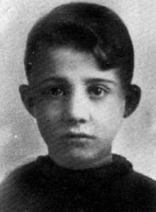

«El joven parecía un muchacho en extremo tímido y de una cultura inferior a la media. Tenía, sin embargo, un temperamento extraño, pero en ninguna ocasión había manifestado sentimientos hostiles al fascismo». Quince años tenía el protagonista de esta noticia. Tan solo 15, pero de haber acertado en sus disparos contra Mussolini, habría cambiado la historia de Italia y, muy probablemente, la del mundo entero en el siglo más mortífero de la Humanidad.
Y a punto estuvo de conseguirlo Anteo Zamboni, pues se encontraba a escasos metros de su objetivo en el momento que perpetró su intento de asesinato. Hacía solo cuatro años que Mussolini había forzado su nombramiento como presidente del país, en esa especie de golpe de Estado maquillado que fue la famosa marcha violenta sobre la capital, anunciada en Nápoles con toda la pomposidad propia de aquel fascismo recién nacido: «Os digo con toda solemnidad: o se nos entrega el Gobierno o lo tomaremos marchando sobre Roma», aseguró ante 40.000 camisas negras, que respondieron a grito de: «¡A Roma, a Roma!».
A pesar del éxito, el líder de los fascistas italianos contaba con muchos enemigos en italia a causa de los episodios violentos protagonizados que los camisas negras contra sus adversarios políticos. Sobre todo, contra los socialistas y comunistas, llegando, incluso, hasta el secuestro y asesinato. Ese fue el caso del diputado socialista Giacomo Matteotti, que es considerado el punto de partida del régimen dictatorial fascista. Tal es así que el intento de asesinato del joven Zamboni era el cuarto que sufría Mussolini desde su llegada al poder y el tercero de 1926. Lo sorprendente es que este no fue perpetrado por un enemigo feroz, un terrorista peligroso o un miembro poderoso de la oposición, sino por un chaval de 15 años que acabó convirtiéndose en un símbolo de la lucha antifascista.
